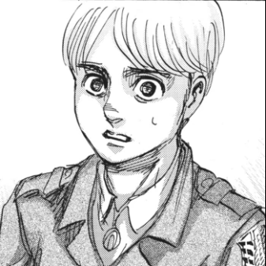
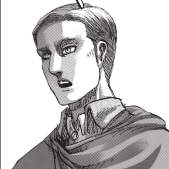
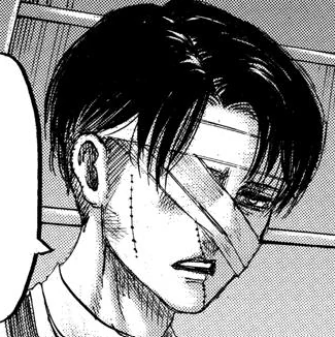
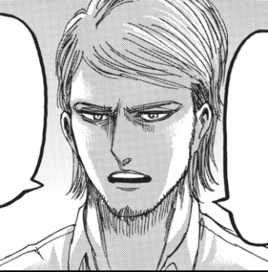

We are in charge of the exploration and reclamation of human territory from Titan-infested lands outside our walls. We are the hope of mankind.
Shinzou o Sasageyo
Armin Arlet, Commander
Erwin Smith, Former Commander
Levi Ackerman, Squad Captain
Jean Kirstein, Commanding Officer
Were their lives meaningless? They were not! Their memory serve as an example to us all! The courageous fallen! The anguished fallen!
Their lives have meaning because we, the living, refuse to forget them! And as we ride to certain death, we trust our successors to do the same for us!
Because my soldiers do not buckle or yield when faced with the cruelty of this world! My soldiers push forward! My soldiers scream out! My soldiers RAAAAAGE!